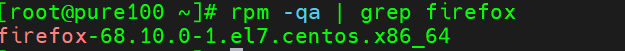
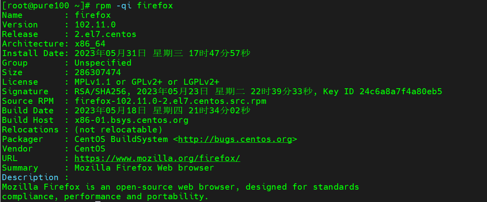
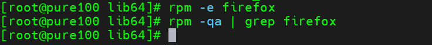
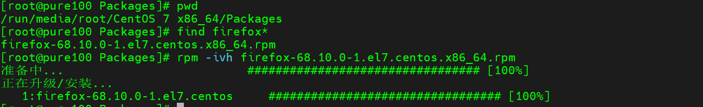
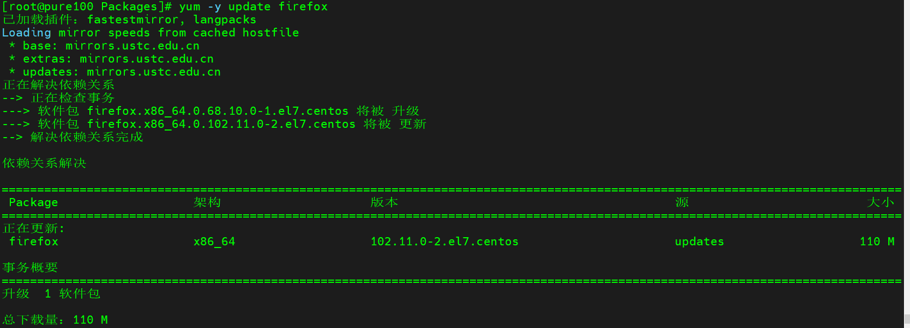
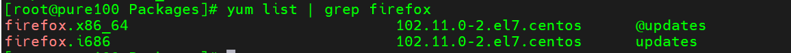
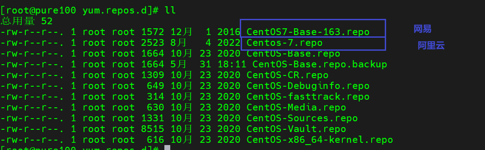
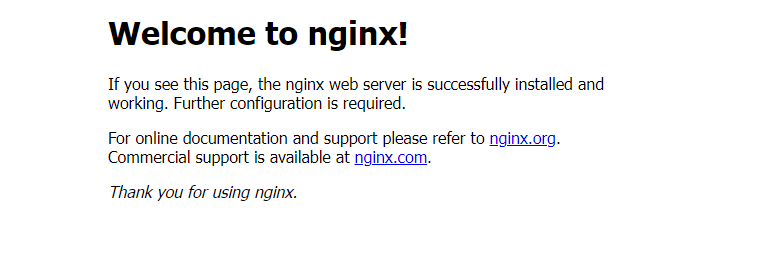

Linux扩展-软件包管理工具

文章目录
大多数现代类 Unix 操作系统都提供了一个集中的软件包管理机制，以帮助用户搜索、安装和管理软件。而软件通常以「包」的形式存储在仓库「repository」中，对软件包的使用和管理被称为包管理。
RPM
概述
RPM（RedHat Package Manager），RedHat软件包管理工具，类似windows里面的setup.exe是Linux这系列操作系统里面的打包安装工具，它虽然是RedHat的标志，但理念是通用的。
RPM包的名称格式：Apache-1.3.23-11.i386.rpm
- “apache” 软件名称
- “1.3.23-11”软件的版本号，主版本和此版本
- “i386”是软件所运行的硬件平台，Intel 32位处理器的统称
- “rpm”文件扩展名，代表RPM包
RPM查询命令（rpm -q）
基本语法
|
|
选项说明
| 选项 | |
|---|---|
| -q | query，查询 |
| -a | 查询所有安装的包 |
| -i | 展示包信息,包括名字,版本,以及描述 |
经验技巧
由于软件包比较多，一般都会采取过滤。rpm -qa | grep rpm软件包
实操案例
查询firefox软件安装情况
|
|

查询irefox软件安装详细情况

RPM 卸载命令（rpm -e）
基本语法
|
|
选项说明
| 选项 | 说明 |
|---|---|
| -e | 卸载软件包 |
| –nodeps | 卸载软件时，不检查依赖。这样的话，那些使用该软件包的软件在此之后可能就不能正常工作了。 |
实操案例
卸载firefox软件
|
|

RPM 安装命令
基本语法
|
|
选项说明
| 选项 | 说明 |
|---|---|
| -i | install，安装 |
| -v | –verbose，显示详细信息 |
| -h | –hash，进度条 |
| –nodeps | 安装前不检查依赖 |
实操案例
安装firefox

YUM
概述
YUM（全称为Yellow dog Updater, Modified）是一个在Fedora 和RedHat 以及CentOS中的Shell 前端软件包管理器。基于RPM 包管理，能够从指定的服务器自动下载RPM 包并且安装，可以自动处理依赖性关系，并且一次安装所有依赖的软件包，无须繁琐地一次次下载、安装。
YUM 常用命令
基本语法
|
|
选项说明
| 选项 | 说明 |
|---|---|
| -y | 对所有提问都回答“yes” |
参数说明
| 参数 | 说明 |
|---|---|
| install | 安装rpm 软件包 |
| update | 更新rpm 软件包 |
| check-update | 检查是否有可用的更新rpm 软件包 |
| remove | 删除指定的rpm 软件包 |
| list | 显示软件包信息 |
| clean | 清理yum 过期的缓存 |
| deplist | 显示yum 软件包的所有依赖关系 |
实操案例
升级firefox

查看firefox安装信息

修改网络YUM 源
默认的系统YUM 源，需要连接国外apache 网站，网速比较慢，可以修改关联的网络YUM 源为国内镜像的网站，比如网易163，aliyun 等
-
安装wget, wget 用来从指定的URL 下载文件
1yum insatll wget -
在/etc/yum.repos.d/目录下，备份默认的repos 文件
1cp CentOS-Base.repo CentOS-Base.repo.backup -
下载网易163 或者是aliyun 的repos 文件，任选其一
1 2wget http://mirrors.aliyun.com/repo/Centos-7.repo # aliyun wget http://mirrors.163.com/.help/CentOS7-Base-163.repo # 网易
-
使用下载好的repos 文件替换默认的repos 文件
1mv CentOS7-Base-163.repo CentOS-Base.repo -
清理旧缓存数据，缓存新数据
1 2yum clean all yum makecache # 把服务器的包信息下载到本地电脑缓存起来 -
测试
1yum -y install firefox
APT
概述
apt 是一个命令行实用程序，用于在 Ubuntu ， Debian 和相关 Linux 发行版上安装，更新，删除和管理 deb 包。它是 apt-get 和 apt-cache 工具的最常用命令和选项的组合。
APT常用命令
APT更新软件包
|
|
APT安装软件包
|
|
APT查询软件包
|
|
APT搜索软件包
|
|
修改APT软件源
系统自带的apt-get源配置文件为/etc/apt/sources.list
Codename与xenial对应表
| 系统 | 对应Codename |
|---|---|
| 12.04 | preclse |
| 14.04 | trusty |
| 15.04 | vivid |
| 15.10 | wily |
| 16.04 | xenial |
| 18.04 | bionic |
| 20.04 | focal |
-
查看自己的系统
Codename1lsb_release -c -
备份原文件
1cp /etc/apt/sources.list /etc/apt/sources.list.bak -
替换原文件内容如下（这里以20.04更改为阿里云镜像源为例）
1 2 3 4 5 6 7 8 9 10 11 12 13 14deb https://mirrors.aliyun.com/ubuntu/ focal main restricted universe multiverse deb-src https://mirrors.aliyun.com/ubuntu/ focal main restricted universe multiverse deb https://mirrors.aliyun.com/ubuntu/ focal-security main restricted universe multiverse deb-src https://mirrors.aliyun.com/ubuntu/ focal-security main restricted universe multiverse deb https://mirrors.aliyun.com/ubuntu/ focal-updates main restricted universe multiverse deb-src https://mirrors.aliyun.com/ubuntu/ focal-updates main restricted universe multiverse # deb https://mirrors.aliyun.com/ubuntu/ focal-proposed main restricted universe multiverse # deb-src https://mirrors.aliyun.com/ubuntu/ focal-proposed main restricted universe multiverse deb https://mirrors.aliyun.com/ubuntu/ focal-backports main restricted universe multiverse deb-src https://mirrors.aliyun.com/ubuntu/ focal-backports main restricted universe multiverse -
更新软件源以及更新软件
1sudo apt-get update && apt-get upgrade
源码包手动安装
概述
所谓的源码包，就是直接给你一个开放的源程序。作者写的时候是什么样，给你的就是什么样，这就是源码包，Linux的源码包大多是用C语言写的。
-
源码包的优点
-
开源，如果有足够的能力，可以修改源代码
-
可以自由的选择所需的功能
-
软件是编译安装，所以更加适合自己的系统，更加稳定也效率更高
-
卸载方便，直接删除安装目录就可以，window这样会遗留很多残存文件
-
-
源码包的缺点
- 安装过程步骤较多，尤其安装较大的软件集合时，容易出现拼写错误
- 编译过程时间较长，安装比二进制安装时间长
- 因为是编译安装，安装过程中一旦报错新手很难解决
安装Nginx
-
官网下载Nginx资源，上传到系统
或使用wget下载资源
1wget https://nginx.org/download/nginx-1.20.2.tar.gz -
下载依赖
1yum -y install gcc openssl openssl-devel pcre-devel zlib zlib-devel -
解压并进入目录
1 2tar -zxvf nginx-1.20.2.tar.gz cd nginx-1.20.2 -
使用nginx默认配置
1./configure -
编译安装
1 2make make install -
查看nginx安装目录
1whereis nginx -
运行nginx，进入sbin目录，可以看到有一个可执行文件nginx，直接**./nginx**执行就OK了。
1./nginx -
查看是否启动成功
1ps -ef | grep nginx -
访问ip:80

文章作者 Pure3417
上次更新 2023-05-31